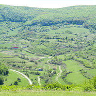
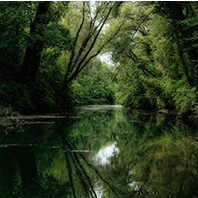
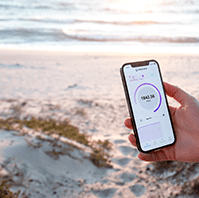
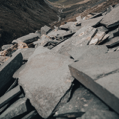
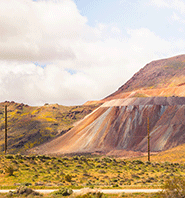

Numérique responsable : l’Europe vote une résolution historique
Alors que l’indice de réparabilité entrera en vigueur au 1er janvier 2021 en France et qu’une projet de loi est en cours au Sénat pour réduire l’empreinte environnementale du numérique, le Parlement européen a voté le 25 novembre dernier une résolution qui enjoint la Commission européenne à proposer un ensemble de dispositifs pour glisser vers une consommation plus responsable.
40 000 enfants fabriquent votre smartphone
C’est la rentrée pour nos enfants ! L’occasion de rappeler que pour 40 000 d’entre eux, la rentrée se fera à la mine. Littéralement. Alors que nous nous réjouissons en Europe de la rentrée de nos bambins, 40 000 enfants esclaves des mines de coltan en RDC n’auront pas cette chance.
Sobriété numérique : les clés pour agir
Smartphones, ordinateurs, tablettes, consoles de jeux, GPS ont envahi notre quotidien. Chaque jour, nous les utilisons pour nous connecter à internet, regarder la télévision, communiquer sur les réseaux sociaux, partager des photos, acheter un billet de train…

La low-tech : un outil de résilience pour l’humanité ?
Dans un monde fini tel que le nôtre, comment peut on encore croire que l’univers numérique va continuer son expansion dans sa forme et à son rythme actuels ? Les ressources pour fabriquer nos doudous numériques commencent déjà à manquer.

Quelle est l’empreinte environnementale du numérique mondial ?
Alors que le numérique envahit notre quotidien, les impacts environnementaux associés ne cessent de croître. Mais dans quelles proportions ? Quelle est précisément notre empreinte numérique ? De quoi est-elle constituée ? Et quelle est sa dynamique ?
Déchets électroniques : + 21 % en 5 ans
Selon la troisième édition du rapport « The Global E-Waste Monitor 2020 » du Global E-waste Statistics Partnership (GESP), l’humanité a battu un triste record en 2019 en produisant 53,6 millions de tonnes de déchets électroniques, soit une croissance de 21 % en 5 ans.

5G : quels seront les impacts environnementaux ?
Le déploiement de la 5G est un sujet chaud dans l’actualité. Débats, controverses, fake news, arguments plus ou moins sérieux : tout le monde s’en donne à cœur joie. L’occasion de faire un point rapide pour vous briefer sur les impacts environnementaux de la 5G.

500 fois son poids en matière première
Sujet incontournable dans le numérique tant il y participe, l’épuisement des ressources abiotiques – les fameuses ressources naturelles non renouvelables en langage profane – est difficile à médiatiser

Le jour d’après : avec ou sans numérique ?
Dans la première partie de cet article, nous avons constaté que la crise sanitaire COVID19 nous a permis de prendre conscience que tout n’est pas perdu : en apaisant la société actuelle, il est possible d’espérer un retour à l’équilibre écologique. Il faut cependant changer de braquet.